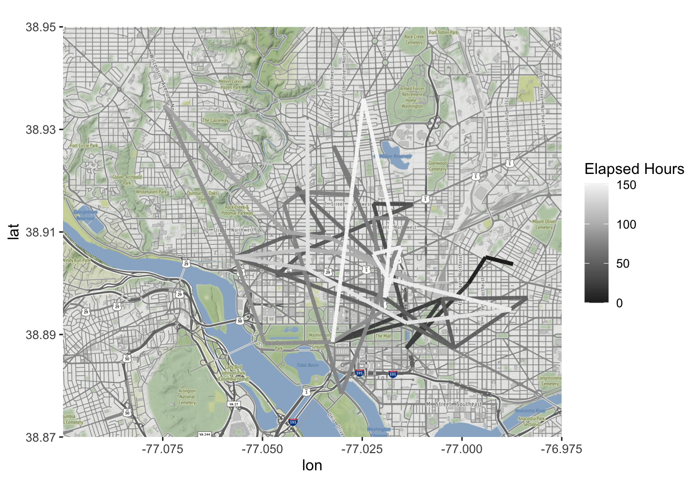
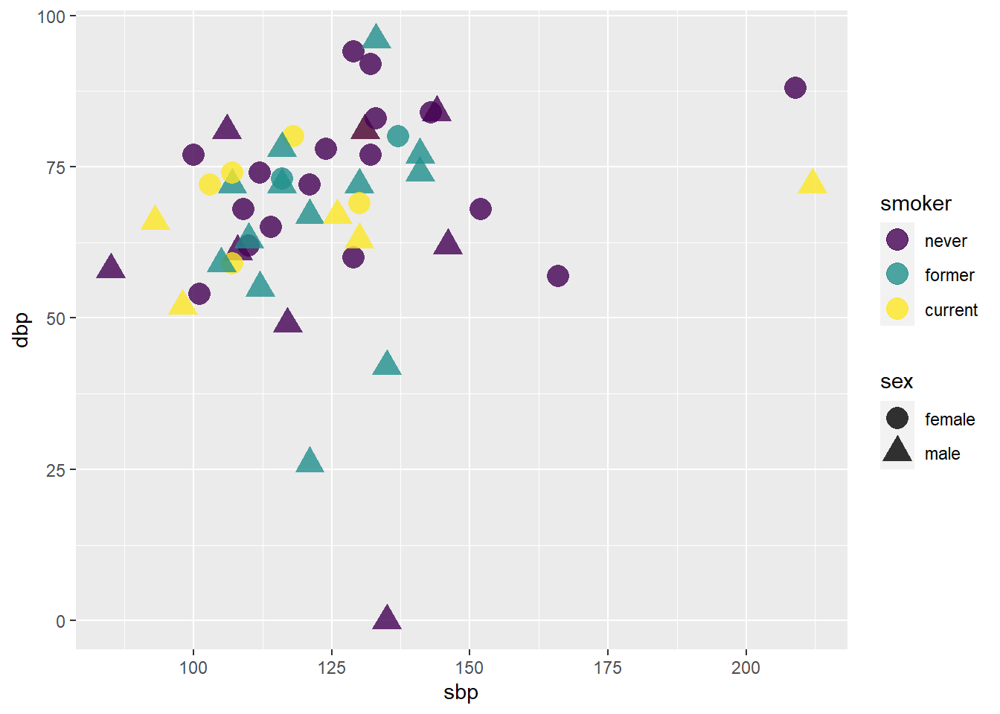

Topic 2 Exploratory Data Analysis
Learning Goals
- Understand the first steps that should be taken when you encounter a new data set
- Develop comfort in knowing how to explore data to understand it
- Develop comfort in formulating research questions
You can download a template .Rmd of this activity here.
First Steps of a Data Analysis
What are the first steps to take when you start a project or get a hold of a new data set?
In a data science project, you will typically have a question or idea brought to you: How are people interacting with the new version of my software? How is weather in St. Paul changing in the last decade? What type of people are most likely to enroll in Obamacare?
You will sometimes be given a dataset when asked one of these questions, or more often, a general description of the data you could get if you talked to the right people or interacted with the right software systems.
In this section, we will talk about Exploratory Data Analysis (EDA), a name given to the process of
- “getting to know” a dataset, and
- trying to identify any meaningful insights within it.
Grolemund and Wickham visualize the place of this “Understand” process with a simple diagram:

Figure 2.1: The process of EDA, as described by Grolemund and Wickham.
We view the process similarly:
- Understand the basic data that is available to you.
- Visualize and describe the variables that seem most interesting or relevant.
- Formulate a research question.
- Analyze the data related to the research question, starting from simple analyses to more complex ones.
- Interpret your findings, refine your research question, and return to step 4.
Understand the Basic Data
Start by understanding the data that is available to you. If you have a codebook, you have struck gold! If not (the more common case), you’ll need to do some detective work that often involves talking to people. At this stage, ask yourself:
- Where does my data come from? How was it collected?1
- Is there a codebook? If not, how can I learn about it?
- Are there people I can reach out to who have experience with this data?
Next, you need to load the data and clean it. Once the data is loaded, ask yourself about each table:
- What is an observation?
- How many observations are there?
- What is the meaning of each variable?
- What is the type of each variable (date, location, string, factor, number, boolean, etc.)?
Some great methods to start with are the functions
str()to learn about the numbers of variables and observations as well as the classes of variableshead()to view the top of the data table (can specify the number of rows withn=)tail()to view the bottom of the data table
Here is an example:
crime <- read_csv("http://datasets.flowingdata.com/crimeRatesByState2005.csv")
str(crime)## spec_tbl_df [52 × 9] (S3: spec_tbl_df/tbl_df/tbl/data.frame)
## $ state : chr [1:52] "United States" "Alabama" "Alaska" "Arizona" ...
## $ murder : num [1:52] 5.6 8.2 4.8 7.5 6.7 6.9 3.7 2.9 4.4 35.4 ...
## $ forcible_rape : num [1:52] 31.7 34.3 81.1 33.8 42.9 26 43.4 20 44.7 30.2 ...
## $ robbery : num [1:52] 140.7 141.4 80.9 144.4 91.1 ...
## $ aggravated_assault : num [1:52] 291 248 465 327 387 ...
## $ burglary : num [1:52] 727 954 622 948 1085 ...
## $ larceny_theft : num [1:52] 2286 2650 2599 2965 2711 ...
## $ motor_vehicle_theft: num [1:52] 417 288 391 924 262 ...
## $ population : num [1:52] 2.96e+08 4.55e+06 6.69e+05 5.97e+06 2.78e+06 ...
## - attr(*, "spec")=
## .. cols(
## .. state = col_character(),
## .. murder = col_double(),
## .. forcible_rape = col_double(),
## .. robbery = col_double(),
## .. aggravated_assault = col_double(),
## .. burglary = col_double(),
## .. larceny_theft = col_double(),
## .. motor_vehicle_theft = col_double(),
## .. population = col_double()
## .. )
## - attr(*, "problems")=<externalptr>head(crime)## # A tibble: 6 × 9
## state murder forcible_rape robbery
## <chr> <dbl> <dbl> <dbl>
## 1 United States 5.6 31.7 141.
## 2 Alabama 8.2 34.3 141.
## 3 Alaska 4.8 81.1 80.9
## 4 Arizona 7.5 33.8 144.
## 5 Arkansas 6.7 42.9 91.1
## 6 California 6.9 26 176.
## # … with 5 more variables:
## # aggravated_assault <dbl>,
## # burglary <dbl>, larceny_theft <dbl>,
## # motor_vehicle_theft <dbl>,
## # population <dbl>tail(crime)## # A tibble: 6 × 9
## state murder forcible_rape robbery
## <chr> <dbl> <dbl> <dbl>
## 1 Vermont 1.3 23.3 11.7
## 2 Virginia 6.1 22.7 99.2
## 3 Washington 3.3 44.7 92.1
## 4 West Virginia 4.4 17.7 44.6
## 5 Wisconsin 3.5 20.6 82.2
## 6 Wyoming 2.7 24 15.3
## # … with 5 more variables:
## # aggravated_assault <dbl>,
## # burglary <dbl>, larceny_theft <dbl>,
## # motor_vehicle_theft <dbl>,
## # population <dbl>Finally, ask yourself about the relationships between tables:
- What variables are keys and link the tables (i.e., which variables can you use in
joincommands)?
Visualize and Describe the Data
Once you have the data loaded and cleaned, it is usually helpful to do some univariate visualization; e.g., plotting histograms, densities, and box plots of different variables. You might ask questions such as:
- What do you see that is interesting?
- Which values are most common or unusual (outliers)?
- Is there a lot of missing data?
- What type of variation occurs within the individual variables?
- What might be causing the interesting findings?
- How could you figure out whether your ideas are correct?
Once you have done some univariate visualization, you might examine the covariation between different variables. One convenient way to do this is with a pairs plot.
Here are three different versions of such plots based on 2005 crime data (rates per 100,000 population) from Chapter 6 of Visualize This, by Nathan Yau. The main point of such plots is not necessarily to draw any conclusions, but help generate more specific research questions and hypotheses.
crime2 <- crime %>%
filter(state != "District of Columbia", state != "United States")
pairs(crime2[, 2:9], bg = "lightblue", panel = panel.smooth)
ggpairs(crime2[, 2:9], aes(alpha = 0.4))
lowerFn <- function(data, mapping, method = "lm", ...) {
p <- ggplot(data = data, mapping = mapping) +
geom_point(colour = "blue") +
geom_smooth(method = method, color = "red", ...)
p
}
ggpairs(
crime2[, 2:9],
lower = list(continuous = wrap(lowerFn, method = "lm")),
diag = list(continuous = wrap("barDiag", colour = "blue")),
upper = list(continuous = wrap("cor", size = 5))
)
Formulate a Research Question
You will often end up with a lot of data, and it can be easy to be overwhelmed. How should you get started? One easy idea is to brainstorm ideas for research questions, and pick one that seems promising. This process is much easier with more than one brain! You will often be working off of a broad question posed by your business, organization, or supervisor, and be thinking about how to narrow it down. To do so, you can again revisit questions like “What patterns do you see?” or “Why might they be occurring?”
Practice: Flight Data
Let’s practice these steps using data about flight delays from Kaggle. You have access to the data for airlines, airports, and flights.
There are three tables of data:
airlines <- read_csv("https://bcheggeseth.github.io/112_fall_2022/data/airlines.csv")
airports <- read_csv("https://bcheggeseth.github.io/112_fall_2022/data/airports.csv")
flights <- read_csv("https://bcheggeseth.github.io/112_fall_2022/data/flights_jan_jul_sample2.csv")Note that the full set of flight data has more than 5.8 million flights. To start, I have given you a subset that includes all flights in the first 15 days of January 2015 and in the first 15 days of July 2015. If at the end you wish to try your analysis on the whole data set, you can download the original .csv file from the Kaggle page and substitute a link to it in the code chunk above.
There is a ton of data here, and it can be easy to be overwhelmed. We are going to focus our exploration a bit by considering the following broad research question: which flights are most likely to be delayed?
Exercise 2.1 (Data source) Where does this data come from? Who collected it?
Exercise 2.2 (Explore codebook) This data set comes with a codebook on the Kaggle site. Have a look at the codebook to understand which variables are contained in each of the three tables. For example, what are the levels of CANCELLATION_REASON and what do they mean? What is the unit of observation for each table?
Exercise 2.3 (Possible joins) What variables link the three tables? How could you join data from one table to another?
Exercise 2.4 (Visualize and describe the data) Use some univariate and bivariate visualizations to start to explore the questions mentioned above:
- What do you see that is interesting?
- Which values are most common or unusual (outliers)?
- Is there a lot of missing data?
- What type of variation occurs within the individual variables?
- What might be causing the interesting findings?
- How could you figure out whether your ideas are correct?
Exercise 2.5 (Formulate a specific research question) Based on your preliminary visualizations and exploration of the date, formulate a more specific research question/hypothesis within this broad area of understanding the causes of flight delays.
Exercise 2.6 (Share a visualization) Develop a single visualization to share with the class that tells a story about your more specific research question/hypothesis. Note: the story may very well be something along the lines of “we thought variable X would affect flight delays in way Y, but the evidence does not support that.”
Particularly important questions about how it was collected include WHO (whether it is a sample of a larger data set, and, if so, how the sampling was done? Randomly? All cases during a specific time frame? All data for a selected set of users?), WHEN (is this current data or historical? what events may have had an impact?), WHAT (what variables were measured? how was it measured, self-reported through a questionnaire or measured directly?), WHY (who funded the data collection? for what purposes what the data collected? to whose benefit was the data collected?) Answers to such questions strongly impact the conclusions you will be able to draw from the data.↩︎
The graphics in this one are a bit more developed than you would really see in an exploratory analysis, but I think the progression of visualizations is interesting and follows an exploratory story.↩︎